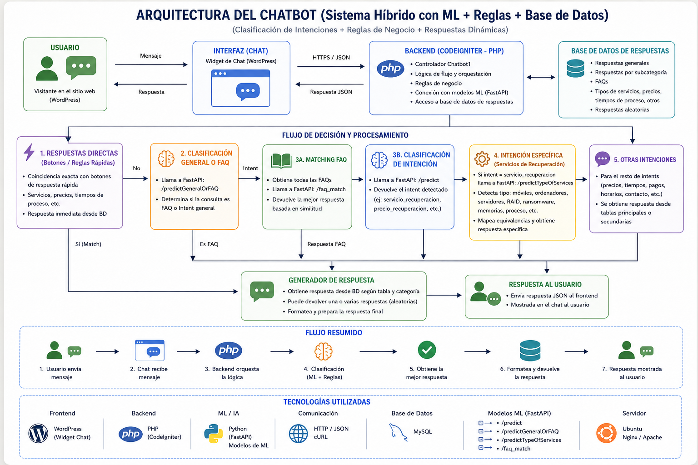

Support Chatbot
🔹 Descripción
Motor conversacional basado en inteligencia artificial diseñado para interpretar lenguaje natural, clasificar intenciones y gestionar respuestas dinámicas en tiempo real dentro de aplicaciones empresariales.
El sistema combina modelos de deep learning entrenados desde cero con una arquitectura backend modular encargada de la orquestación de lógica, gestión de contexto y ejecución de procesos. Está diseñado para integrarse fácilmente con aplicaciones web, ERPs y servicios externos.
Incluye un modelo de clasificación de intenciones basado en BERT, junto con un sistema de matching semántico para FAQs, permitiendo manejar tanto flujos estructurados como consultas abiertas.
🧩 Roles dentro del proyecto
Arquitectura del sistema
- Diseño de arquitectura distribuida (backend + servicios IA)
- Separación de responsabilidades entre lógica, modelos y datos
- Definición de comunicación mediante APIs REST
Desarrollo backend
- Implementación en PHP (CodeIgniter)
- Gestión de peticiones, controladores y flujo conversacional
- Integración con servicios externos y APIs
Desarrollo de modelos de IA
- Entrenamiento de modelo de clasificación de intenciones
- Implementación de modelo de matching semántico (FAQ)
- Preprocesamiento y normalización de texto
- Evaluación y optimización de rendimiento
Servicio de inferencia
- Despliegue de modelos mediante API en FastAPI
- Gestión de inferencias en tiempo real
- Optimización de latencia y consumo de recursos
Motor conversacional
- Gestión de intents, respuestas y fallback
- Control de flujo conversacional y decisiones
- Sistema híbrido: reglas + IA
Gestión de datos
- Diseño de estructuras de almacenamiento
- Persistencia de respuestas, FAQs y configuraciones
Optimización
- Control de errores y fallback inteligente
- Thresholds de confianza para decisiones
- Optimización de inferencia (CPU/GPU)
⚙️ Arquitectura

🖥️ Tecnologías
🚀 Funcionalidades
- Clasificación automática de intención
- Matching semántico de FAQs
- Procesamiento de lenguaje natural
- Respuestas dinámicas basadas en contexto
- Integración con sistemas externos